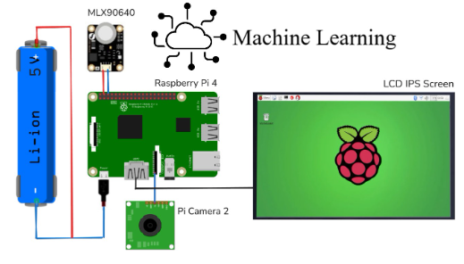
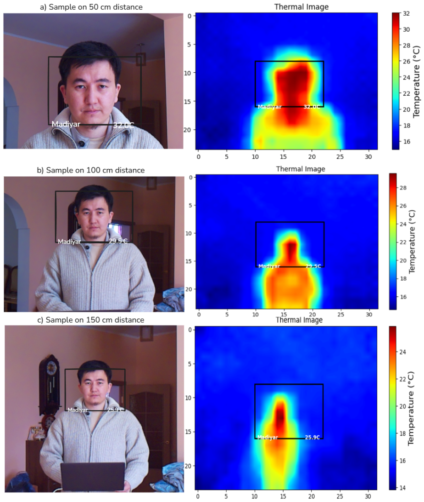
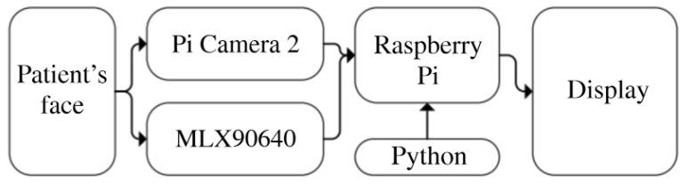
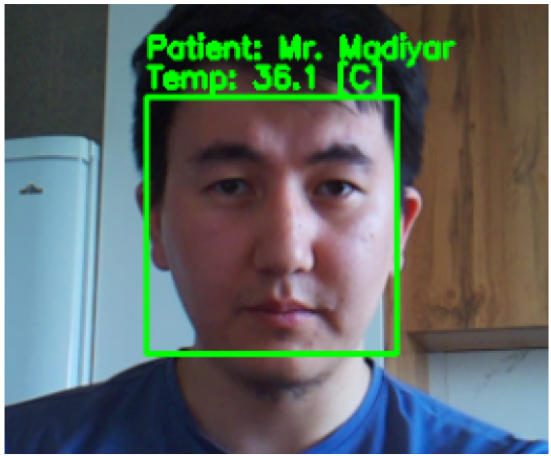
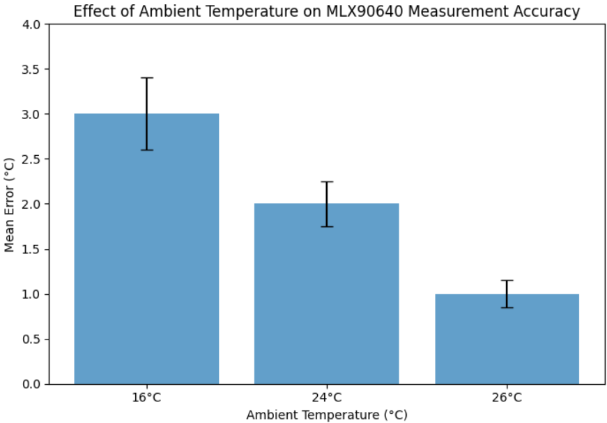

An Intelligent System for Automated Monitoring and Control of Patient Conditions

Abstract
This paper presents a contactless temperature monitoring and patient identification system intended to meet stringent sanitary requirements in modern healthcare. By integrating a Raspberry Pi 4, an MLX90640 thermal sensor accurate to ±1 °C, and a Pi Camera Module 2 with 90–95% face recognition accuracy, it enables rapid, noninvasive detection of abnormal temperatures while minimizing staff-patient contact. The sensor's 24 × 32 infrared array is fused with RGB frames for temperature assessment and identity verification. Controlled trials at ambient temperatures of 16, 24, and 26 °C consistently record ~33 °C on healthy foreheads, closely matching results from standard infrared thermometers. Minor temperature reductions occur with increasing distance, highlighting the need for proper alignment. Automated logging in a local SQLite database streamlines clinical workflows, allowing immediate retrieval of recorded data. Additionally, the approach significantly lowers staff workload by automating identification tasks, promoting safer, more efficient procedures. The findings underscore cost-effectiveness and scalability for continuous screening in diverse clinical environments, while reducing cross-contamination risks through rapid, contactless operation. Future efforts will broaden the dataset for enhanced algorithmic robustness, incorporate multi-parameter assessments of vital signs, and refine sensor calibration across variable conditions. Overall, this solution offers a promising avenue toward improved operational efficiency and infection control, aligning with contemporary standards for data-driven medical practice.
Key Figures





Read the Full Paper
Published in Springer Proceedings · AIR 2025 · Nov 22, 2025
open_in_new VIEW ON SPRINGER